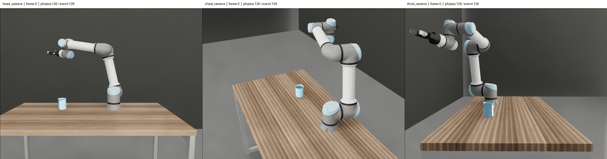
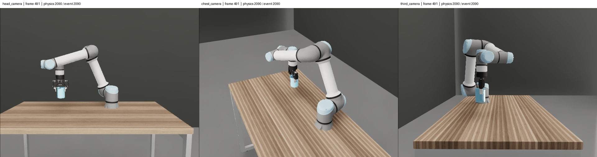
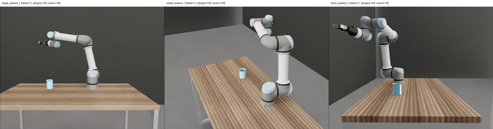
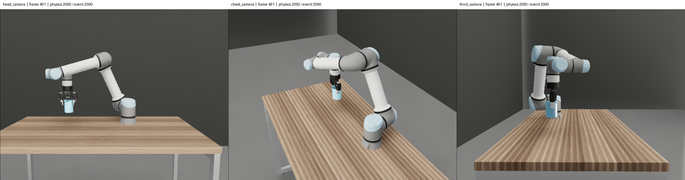
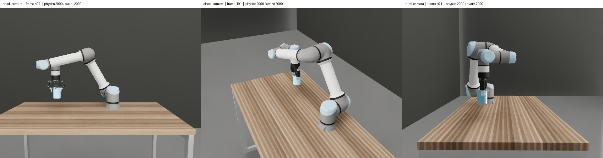

批量终审清单UR5e 抓取 250 mL 烧杯
运动学桌固定，烧杯稳定后开录。双指持续受力后，专家根据实测杯心与手腕的位置抬升。每段视频以 30 Hz 同步记录。
首条 · #000
开录帧 · 物理步 126 · 头部、胸部、第三视角
末帧 · 物理步 2090 · 头部、胸部、第三视角
中间条 · #050
开录帧 · 物理步 126 · 头部、胸部、第三视角
末帧 · 物理步 2090 · 头部、胸部、第三视角
手杯力峰最高条 · #095
开录帧 · 物理步 126 · 头部、胸部、第三视角末帧 · 物理步 2090 · 头部、胸部、第三视角
回合 #000
终点误差 4.96 mm，手杯力峰 3.22 N。
头部胸部第三视角
回合 #017
终点误差 4.98 mm，手杯力峰 3.20 N。
头部胸部第三视角
回合 #033
终点误差 4.97 mm，手杯力峰 3.18 N。
头部胸部第三视角
回合 #050
终点误差 4.97 mm，手杯力峰 3.21 N。
头部胸部第三视角
回合 #076
终点误差 4.98 mm，手杯力峰 3.17 N。
头部胸部第三视角
回合 #095
终点误差 4.98 mm，手杯力峰 3.26 N。
头部胸部第三视角